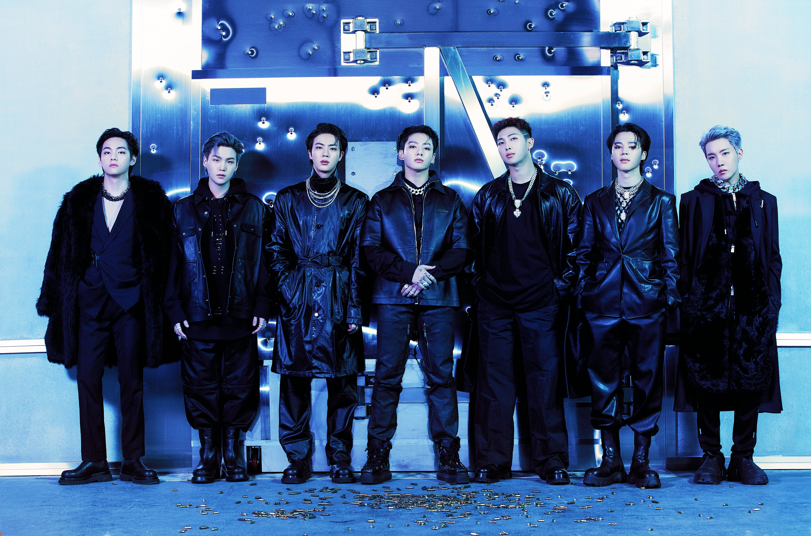

BTS (Korean: 방탄소년단; RR: Bangtan Sonyeondan), also known as the Bangtan Boys, is a South Korean boy band formed in 2010 and debuting in 2013 under Big Hit Entertainment. The septet—consisting of members Jin, Suga, J-Hope,
RM, Jimin, V, and Jungkook—co-writes and co-produces much of their own material. Originally a hip hop group, their musical style has evolved to incorporate a wide range of genres; their lyrics have often discussed mental health, the troubles of
school-age youth and coming of age, loss, the journey towards self-love, and individualism. Their work also frequently references literature, philosophy and psychological concepts, and includes an alternate universe storyline.

After launching in 2013 with their single album 2 Cool 4 Skool, BTS respectively released their first Korean-language studio album, Dark & Wild, and Japanese-language studio album, Wake Up, in 2014. The group's second Korean studio album,
Wings (2016), was their first to sell one million copies in South Korea. By 2017, BTS had crossed into the global music market, leading the Korean wave into the United States and breaking several sales records. They became the first Korean
ensemble to receive a Gold certification from the Recording Industry Association of America (RIAA) for their single "Mic Drop", as well as the first act from South Korea to top the Billboard 200 with their studio album Love Yourself: Tear (2018).
BTS became one of the few groups since the Beatles in 1966–1968 with four US number-one albums in less than two years, and Love Yourself: Answer (2018) was the first Korean album certified Platinum by the RIAA. In 2020, BTS became the first
all-South Korean act to reach number one on the Billboard Hot 100 and Billboard Global 200 with their Grammy-nominated single "Dynamite". Their follow-up releases "Savage Love", "Life Goes On", "Butter", and "Permission to Dance" made them the
quickest act to earn four US number-one singles since Justin Timberlake in 2006.
As of 2022, BTS is the best-selling artist in South Korean history, having sold in excess of 30 million albums via the Circle Chart, and their studio album Map of the Soul: 7 (2020) is the best-selling album of all time in South Korea.
They are the first non-English-speaking and Asian act to hold sold-out concerts at Wembley Stadium and the Rose Bowl (Love Yourself World Tour in 2019), and were named the International Federation of the Phonographic Industry's (IFPI) Global
Recording Artist of the Year for both 2020 and 2021. The group's many accolades include multiple American Music Awards, Billboard Music Awards, Golden Disc Awards, and nominations for two Grammy Awards. In 2017, they partnered with UNICEF to
establish the Love Myself anti-violence campaign, going on to address three sessions of the United Nations General Assembly. Featured on Time's international cover as "Next Generation Leaders" and dubbed the "Princes of Pop", BTS has also
appeared on Time's lists of the 25 most influential people on the internet (2017–2019) and the 100 most influential people in the world (2019), and in 2018 became the youngest recipients of the Order of Cultural Merit from the President of South
Korea for their contributions in spreading Korean culture and language.
Influences
BTS member Jin (center) performing Freddie Mercury's "ay-oh" chant during their first concert at Wembley Stadium on June 1, 2019
BTS have cited Seo Taiji and Boys,[273] Nas, Eminem, Kanye West, Drake, Post Malone, Charlie Puth, and Danger as musical inspirations.[274] They have also cited Queen as an influence, saying they "grew up watching videos of Live Aid".[275] During
their concert at Wembley Stadium in London, Jin paid tribute to Queen by leading the crowd in a version of Freddie Mercury's "ay-oh" chant.[275]
Their 2016 album Wings was inspired by Hermann Hesse's coming of age novel, Demian.[276] Their song "Blood Sweat & Tears" quotes Friedrich Nietzsche's Thus Spoke Zarathustra, and its music video features visual references to Herbert James
Draper's The Lament for Icarus, Pieter Bruegel's Landscape with the Fall of Icarus, and Pieter Bruegel's The Fall of the Rebel Angels.[277] Among the literary and other sources that have inspired their works are those by Haruki Murakami, Ursula K
Le Guin, Carl Jung, George Orwell and Nietzsche.[278] The Love Yourself series was influenced by Erich Fromm's The Art of Loving,[268][279] and their 2018 song "Magic Shop" from Love Yourself: Tear was inspired by James R. Doty's memoir Into the
Magic Shop.[280]
Musical Style
Since their inception, BTS have emphasized hip hop as their musical base, largely due to the influence of RM and Suga's background as underground rappers;[281] during visits to the US, the group has received mentoring from American rappers.[282]
Bang Si-hyuk previously acknowledged that K-pop as a whole draws from black music,[283] and author Crystal S. Anderson noted, "BTS's rising popularity in the US represents the continuation of the ways that K-pop functions as part of a global R&B
tradition."[284]
BTS experimented with R&B, rock and jazz hip hop on Dark & Wild in 2014;[285][286] EDM in their The Most Beautiful Moment in Life album series;[50] moombahton and neo soul on Wings and You Never Walk Alone ;[287][67] future bass, Latin pop in
their Love Yourself album series;[82] Korean rap, electro disco, slow-dance ballads,[288] emo rap, Afro pop,[289] funk, trap, pop rock, and hip pop in their Map of the Soul album series;[290] and disco pop in their single "Dynamite".[291][292]
Lyrical Themes
Since their formation, BTS have believed that telling their own stories is the best way for the younger generation to relate to their music.[293] Writing many of their own lyrics,[294][295] the group discusses universal life experiences such as
sadness and loneliness in their work and turn them into something lighter and more manageable. RM said that BTS tries to avoid a preaching or reprimanding tone in their songs "because that's not the way that we want to spread our message ...
We're born with different lives, but you cannot choose some things. So we thought that love, the real meaning of it, starts with loving ourselves and accepting some ironies and some destinies that we have from the very start."[296] When asked if
it is difficult to write about things like mental health, Suga responded,
We feel that people who have the platform to talk about those things really should talk more, because they say depression is something where you go to the hospital and you're diagnosed, but you can't really know until the doctor talks to you ...
More and more, I think artists or celebrities who have a voice should talk about these problems and bring it up to the surface.[296]
Themes explored in BTS' discography have gone from exploring "the troubles and anxieties of school-age youth [to] themes like love, friendship, loss, death, and more"[297] Early BTS entries, such as "No More Dream" and "N.O" from their school
trilogy, were described by Herman as motivated by personal experiences with South Korea's rigid approach to education and called for change to the educational system and societal expectations.[298] The members' experiences with South Korean youth
culture also inspired the songs "Dope" and "Silver Spoon" (Korean: 뱁새; RR: Baepsae) from their youth trilogy. These songs reference generational disparity and millennials having to give up romantic relationships, marriage, children, proper
employment, homes, and social life in the face of economic difficulties and societal ills while facing condemnation from the media and older generations.[298] The group's label dubbed The Most Beautiful Moment in Life: Young Forever, the
conclusion to their youth trilogy, "a special album that marks the conclusion of the epic journey of the series, containing the last stories told by young people who, despite an uncertain and insecure reality (The Most Beautiful Moment in Life
Pt. 1) continue to surge forward (The Most Beautiful Moment in Life Pt. 2)."[299] Wings focused on mental health, criticisms of the Korean-pop “idol” scene, and delivering a female-empowerment message.[300] The Love Yourself series introduced new
themes regarding youth culture in South Korea, including the excitement of love, pain of farewell, and enlightenment of self-love.[301] According to Sprinkel, BTS' 2020 "quarantine album" Be "chronicles the group's coming to terms with a suddenly
new reality and offers support for their listeners going through the same upheaval and uncertainty".[302]
BTS' lyrics have also addressed topics outside youth culture specifically. The song "Am I Wrong" from Wings questioned societal apathy towards changing the status quo; the lyric "We're all dogs and pigs / we become dogs because we're angry"
appeared to reference South Korean Ministry of Education official Na Hyang-wook, who advocated a caste system for the country and who reportedly described average people as "dogs and pigs". BTS released the song amid the 2016 South Korean
political scandal that resulted in the impeachment of president Park Geun-hye.[298] RM and Suga's personal struggles with mental health have inspired some of their music.[296][303] "Not Today" from 2017's You Never Walk Alone is an
anti-establishment anthem, urging "all the underdogs in the world" to keep fighting,[304] and "Spring Day" honored the victims of the Sewol Ferry tragedy.[305] Journalist Jeff Benjamin praised BTS in Fuse for "speak[ing] honestly about topics
they deem important, even in a conservative society".[306] Former South Korean president Moon Jae-in praised the septet: "Each of the seven members sings in a way that is true to himself and the life he wants to live. Their melody and lyrics
transcend regional borders, language, culture, and institutions."[307]